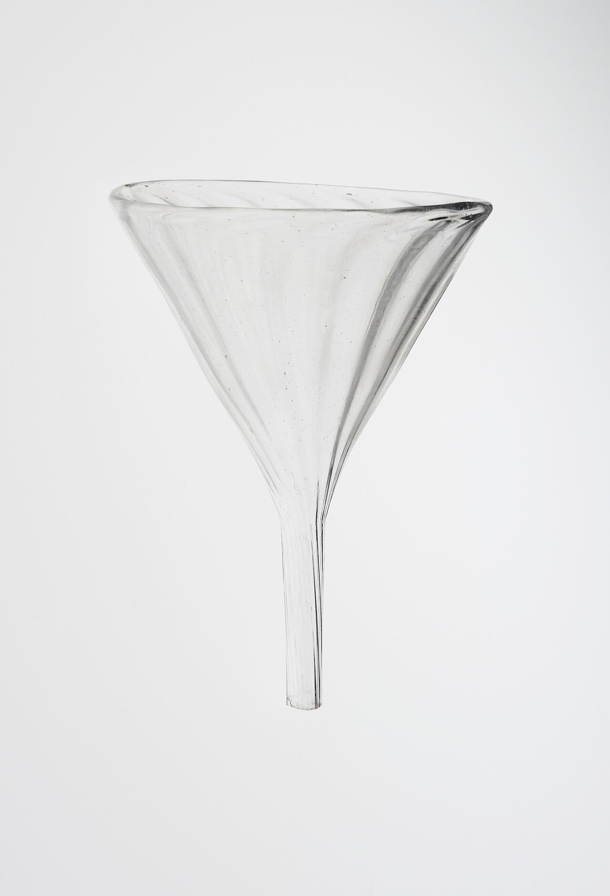
깔때기 "어디로 모을지"를 계산하지 않는다
어디에 떨어뜨리든 결과는 하나의 출구입니다. 입력의 위치 정보는 형태에 의해 버려지고, 출력은 항상 같습니다.
소프트웨어로 쓰면 x = center 한 줄이지만, 깔때기는 그 한 줄을 전원 없이, 지연 없이, 고장 없이 실행합니다.
캔버스 위쪽 아무 곳이나 클릭하거나 드래그해서 물방울을 떨어뜨려 보세요.
디자인 스터디 · 인터페이스는 화면과 센서에서 끝나는가
우리는 계산을 컴퓨터 안에서만 찾습니다.
하지만 깔때기, 스프링, 지퍼, 천에는 소프트웨어가 없는데도 입력을 받아 변환하고 결과를 냅니다.
이 페이지는 형태·재질·구조가 소프트웨어를 대신하는 사례를 직접 만져보며 이해하기 위한 자료입니다.
각 카드의 코드 / 재료 토글을 눌러 같은 기능을 두 방식으로 비교해 보세요.

어디에 떨어뜨리든 결과는 하나의 출구입니다. 입력의 위치 정보는 형태에 의해 버려지고, 출력은 항상 같습니다.
소프트웨어로 쓰면 x = center 한 줄이지만, 깔때기는 그 한 줄을 전원 없이, 지연 없이, 고장 없이 실행합니다.
캔버스 위쪽 아무 곳이나 클릭하거나 드래그해서 물방울을 떨어뜨려 보세요.
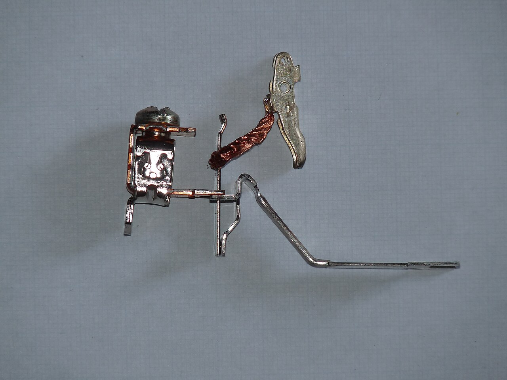
팽창률이 다른 두 금속을 붙이면, 온도가 오를수록 한쪽이 더 늘어나 판이 휩니다. 휘어진 판이 접점에서 떨어지면 회로가 끊깁니다. 온도를 "읽고", 기준과 "비교하고", 출력을 "끄는" 세 단계가 재료 하나에 들어 있습니다. 구형 보일러·다리미·차단기가 이 원리입니다.
loop:
t = read(sensor) // 온도 센서
if t > 70: // 비교
relay.off() // 액추에이터
else:
relay.on()
sleep(100ms) // 전원·MCU·펌웨어 필요센서 = 금속의 열팽창
비교 = 휨이 접점 간격을 넘는 순간
액추에이터 = 휘어진 판 자체
기준 온도는 코드가 아니라 접점까지의 거리에 저장되어 있습니다. 바꾸려면 나사를 돌립니다.
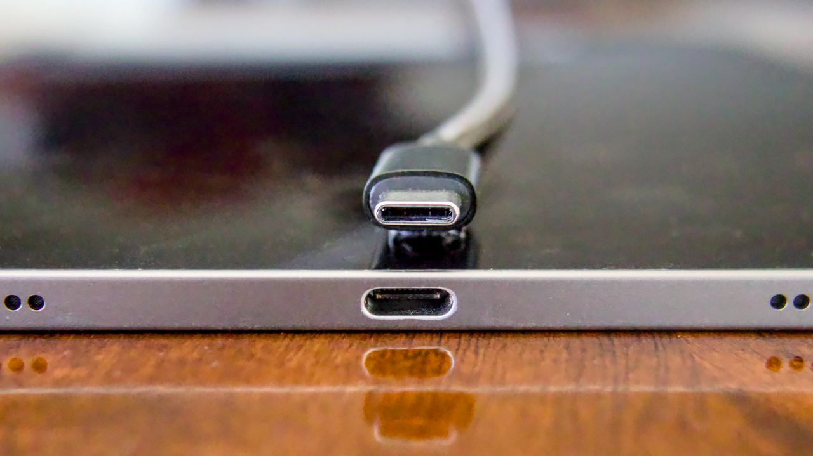
USB-A는 방향이 틀리면 "안 들어간다"는 형태 언어로 거부하지만, 사용자가 3번 뒤집게 만들었습니다. USB-C는 커넥터를 상하 대칭으로 만들어 잘못된 입력이라는 상태 자체를 없앴습니다. 에러 메시지도, 방향 감지 센서도 필요 없습니다.
USB-A 비대칭 · 한 방향만 맞음
성공 0 · 실패 0
USB-C 상하 대칭 · 어느 방향이든 맞음
성공 0 · 실패 0
if orientation != EXPECTED:
show("커넥터 방향을 확인하세요")
return ERROR
// 실제 USB-A는 이 조건문을
// 사용자의 손에 맡겼다USB-A는 뒤집힌 플러그를 "거부"합니다. USB-C는 위아래를 똑같이 만들어 "뒤집힌 방향"이라는 상태 자체를 없앴습니다. 에러를 잘 처리한 게 아니라, 에러가 일어날 자리를 형태가 지운 것입니다.
3.5mm 이어폰 플러그(원형 대칭), 무극성 220V 플러그, 양면 자동차 키도 같은 원리입니다. 반대로 구형 열쇠·HDMI·SIM 카드의 모서리 컷은 USB-A처럼 잘못된 방향을 형태로 거부하는 쪽입니다.
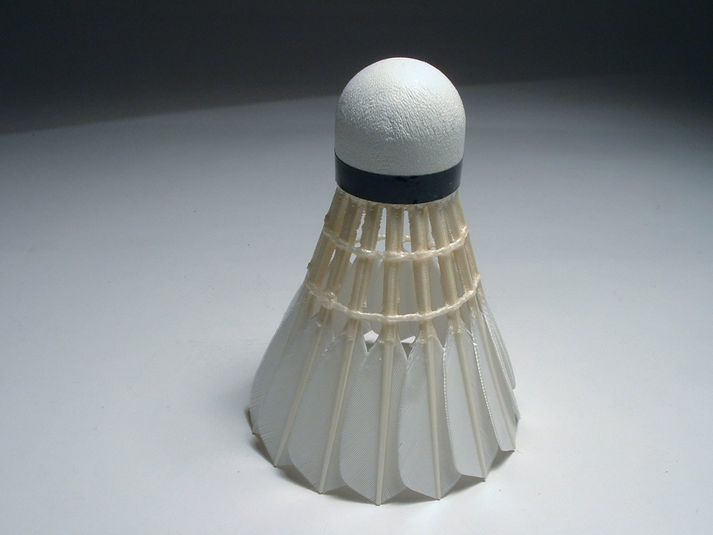
셔틀콕은 무게중심이 앞, 공기저항이 뒤에 몰려 있어 어떻게 쳐도 공중에서 스스로 뒤집혀 정렬됩니다. 자세를 바로잡는 센서도 제어기도 없이 형태의 역학만으로 안정 상태에 수렴합니다.
체크박스를 켜면 형태가 계산을 멈춥니다 · 회전이 감쇠되지 않고 방향이 정해지지 않습니다.
loop:
θ = imu.pitch()
ω = imu.rate()
torque = Kp*θ + Kd*ω // PID
motor.apply(torque)무게중심과 압력중심의 거리가 곧 복원 토크의 이득(K)입니다. 감쇠는 공기저항이 담당합니다. 파라미터는 형태에 새겨져 있고, 전원이 없어도 항상 켜져 있습니다.
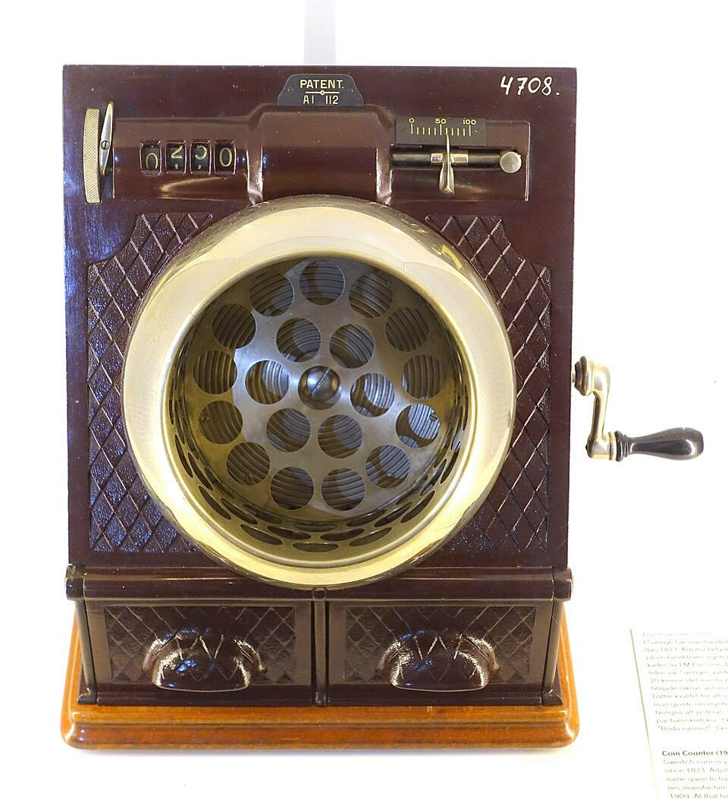
저금통 분류기는 동전을 레일에 굴립니다. 레일에는 구멍이 작은 것부터 큰 것 순서로 나 있고, 동전은 자기 지름보다 큰 첫 구멍에서 떨어집니다. 지름을 "재는" 센서도, 어느 통인지 "판단하는" 코드도 없습니다. 구멍의 오름차순 배치 자체가 정렬된 if-else 사다리입니다.
동전을 넣어 보세요. 소·중·대 세 종류가 무작위로 나옵니다.
for coin in coins:
d = measure(coin) // 지름 센서
if d < 20: bin = A // 분기
elif d < 28: bin = B
else: bin = C
arm.move(coin, bin) // 분류 액추에이터측정 = 구멍을 통과하는가 못 하는가
분기 = 구멍이 작은 순서로 놓인 배치
분류 = 중력
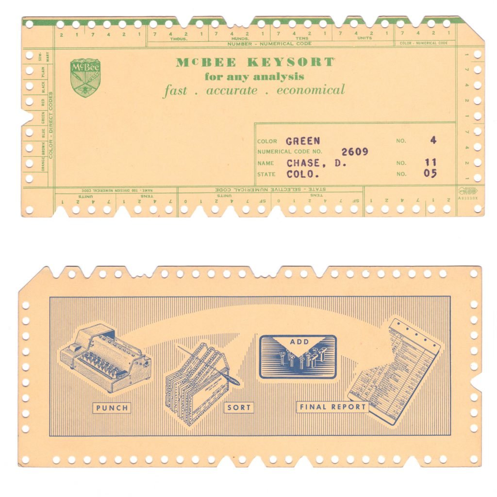
카드 한 장이 레코드 하나입니다. 가장자리의 구멍마다 속성이 하나씩 배정돼 있고, 해당하면 그 구멍을 가장자리까지 잘라 홈으로 만듭니다. 검색할 때는 그 자리에 막대를 꽂아 통째로 들어올립니다 · 구멍이 온전한 카드는 막대에 걸려 딸려 올라오고, 홈이 난 카드만 아래로 떨어집니다. 떨어진 쪽이 검색 결과입니다.
비교도 순회도 없습니다. 카드가 1만 장이어도 걸리는 시간은 똑같습니다 · 한 번 들어올리면 전체가 동시에 판정되기 때문입니다. 막대를 여러 자리에 함께 꽂으면 그게 AND 검색입니다.
속성을 고르고 들어올리기를 누르세요. 홈이 난 카드만 떨어집니다 · 여러 개를 켜면 AND 검색입니다.
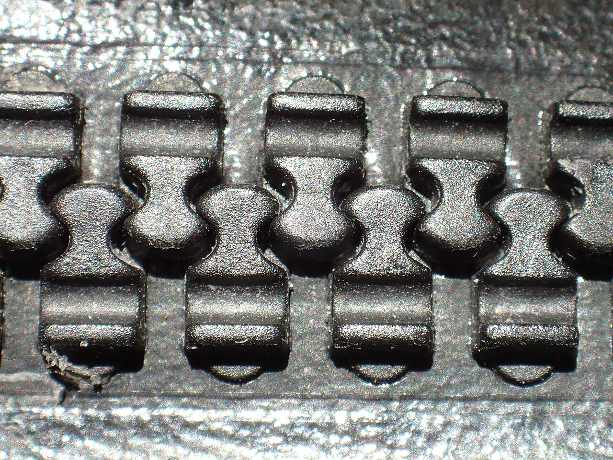
수십 개의 이빨을 하나씩 맞물리는 일은 원래 순차 처리 문제입니다. 지퍼는 슬라이더 안의 Y자 통로가 이 반복문을 대신합니다. 손잡이를 한 번 당기는 직선 운동이 통로를 지나는 동안 "다음 이빨을 맞물려라"가 자동으로 반복됩니다. 루프 변수도 종료 조건도 없이, 통로의 기울기가 곧 알고리즘입니다.
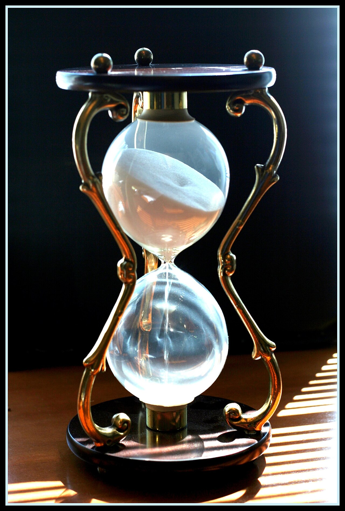
타이머 앱은 클록을 세고 비교하고 알림을 울립니다. 모래시계는 목의 지름과 모래 양이라는 두 상수에 시간을 저장합니다. 전원이 꺼질 일도, 알림 권한도 없습니다. 남은 시간이 모래 높이로 항상 보이므로 "확인하러 화면을 켜는" 단계 자체가 없고, 뒤집기 한 번이 리셋 버튼입니다.
실제로 만들어져 작동한 프로젝트들입니다. 물건이 존재하고, 입어보거나 먹어볼 수 있습니다.
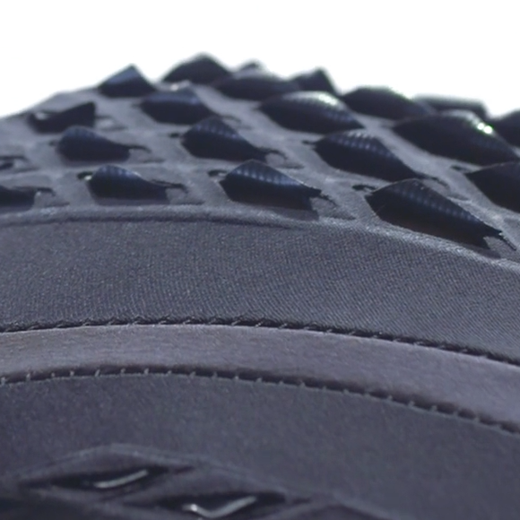
낫토균 세포는 습도가 오르면 최대 50%까지 팽창합니다. 이 균을 천 위에 마이크론 해상도로 프린트하면, 땀이 나는 부위의 통기 플랩이 스스로 열리고 마르면 닫힙니다. 습도 센서·MCU·모터·배터리가 미생물 한 층으로 대체됩니다. New Balance, RCA와 협업해 운동복으로 만들어졌습니다.
플랩 0/12 열림
어두운 플랩일수록 균 코팅이 두꺼워 더 높은 습도에서 열립니다. 문턱값은 코드가 아니라 프린트 두께에 저장됩니다.
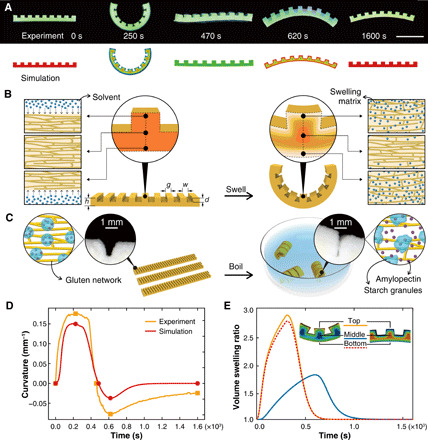
평평한 파스타 표면에 홈을 새기면 삶을 때 홈이 있는 면과 없는 면의 팽창 속도가 달라져 스스로 나선·튜브로 접힙니다(Science Advances, 2021). Thermorph(CHI 2018)는 같은 원리를 데스크톱 3D프린터로: 수축하는 재료와 버티는 재료를 겹쳐 인쇄하면 뜨거운 물에서 정해진 각도로 접힙니다. "접히는 순서와 각도"라는 프로그램이 홈의 간격과 층 배치에 인코딩됩니다. 인쇄 시간 86%, 재료 75% 절감.
홈 간격이 좁을수록 더 강하게 휩니다. 결과 형태는 삶기 전에 이미 홈 패턴에 결정되어 있습니다.
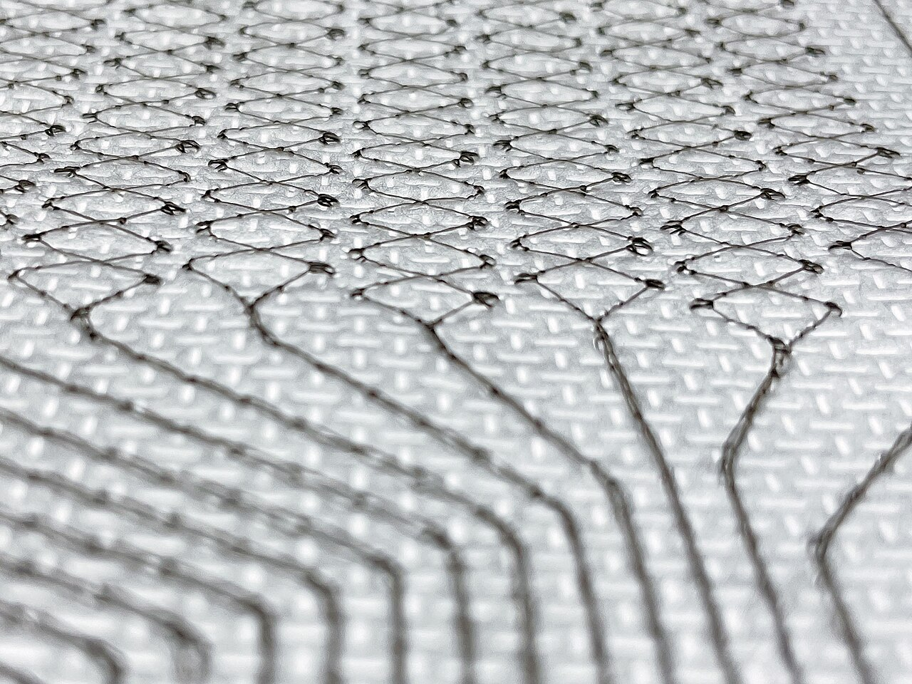
Jacquard는 전도성 합금 코어를 실크로 감싼 실을 만들어 일반 직기로 짤 수 있게 했습니다. 센서를 천에 "붙인" 게 아니라 짜는 구조가 곧 정전용량 격자입니다. Levi's 재킷 소매를 쓸어 전화를 받는 제품으로 출시됐습니다.
Foldio(Olberding, Steimle 외)는 잉크젯으로 종이에 회로를 인쇄한 뒤 접어 3D 물체를 만듭니다. 접힘 각도가 저항 변화로 읽히고, 접는 구조 자체가 입력·출력 표면이 됩니다.
재킷 소매 (전도성 실이 함께 직조됨)
연결된 폰
Track 3
소매를 쓸어보세요
진한 선이 전도성 실입니다. 소매를 오른쪽으로 쓸면 다음 곡, 왼쪽으로 쓸면 이전 곡, 톡 치면 재생/일시정지. 제스처를 읽는 건 앱이 아니라 천의 직조 구조입니다.
물건이 아니라 주장입니다. 위 사례들을 "계산"이라 부를 수 있는 근거를 세운 개념과 논문들입니다.
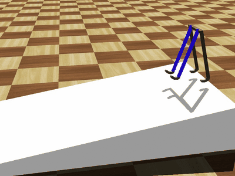
로봇공학에서 나온 개념. 몸의 형태와 재질이 제어 계산의 일부를 "떠맡는다". McGeer의 수동 보행기가 대표 사례 · 제어기 없이 순수 구조가 균형을 계산합니다. 2011년 Hauser 등은 탄성 있는 몸체가 실제로 비선형 계산 능력을 갖는다는 수학적 기초를 제시했습니다(Biological Cybernetics 105).
모터도 제어기도 없습니다. 경사가 공급하는 에너지와 다리의 역학이 맞을 때만 걷습니다. 너무 완만하면 멈추고, 너무 가파르면 넘어집니다.
신경망은 은닉층을 학습시켜 입력을 뒤섞습니다. 여기서는 그 뒤섞는 일을 재료의 흔들림이 대신합니다. 학습되는 건 마지막 한 줄 · 흔들림을 얼마씩 섞을지 정하는 가중치뿐입니다.
실리콘 문어 다리에 입력을 흘리고, 다리 여기저기의 변형만 읽습니다. 다리는 훈련되지 않습니다 · 그냥 흔들릴 뿐입니다. 그 흔들림에 입력의 과거가 저마다 다르게 남아 있어서, 적당한 비율로 더하기만 해도 입력만으로는 만들 수 없는 출력이 나옵니다.
세 개의 읽기 지점이 같은 입력에 저마다 다르게 흔들립니다. 버튼을 누르면 그 셋을 섞는 비율만 계산합니다 · 재료는 그대로입니다.
지능 = 뇌의 계산 지능(CI) + 몸에 인코딩된 물리 지능(PI). 몸이 작아지면 뇌를 넣을 자리가 사라집니다 · 그러면 지능은 몸의 형태와 재질로 옮겨갈 수밖에 없습니다.
지능은 뇌의 계산 지능(CI)뿐 아니라 몸에 인코딩된 물리 지능(PI)으로도 구성된다는 프레임. 부품에는 줄일 수 없는 최소 크기가 있어서, 로봇이 밀리미터급이 되면 배터리도 MCU도 실을 수 없습니다. 감지·구동·제어를 재료 특성으로 옮겨야 하는 이유입니다.
슬라이더로 로봇을 줄여보세요. 부품이 하나씩 빠지고, 뇌가 빠진 뒤에 남는 건 형태·재질이 맡는 기능뿐입니다.
컴퓨터는 혼자서는 아무것도 표현하지 못합니다. 재료와 합쳐질 때 비로소 표현이 됩니다 · 그 합친 것이 Computational Composite입니다. 그리고 어떤 물성으로 표현할지 고르는 일이 Material Programming입니다.
컴퓨터를 다른 재료와 결합해야 비로소 표현되는 재료로 보자는 제안(2007). 이어서 디자이너가 코드가 아니라 재료의 반응 특성 자체를 프로그래밍하는 실천을 "Material Programming"이라 이름 붙였습니다(2016).
만들 것 · 실내 온도를 알려주는 물건
Material Programming · 같은 연산을 어떤 물성으로 표현할까?
연산과 재료를 모두 켜야 물건이 됩니다. 그다음 어떤 물성으로 표현할지 골라보세요 · 코드는 그대로인데 물건의 성격이 바뀝니다.
질문은 "소프트웨어를 없앨 수 있나"가 아니라 "어떤 계층의 계산을 재료로 내려보낼 것인가"입니다. 기능을 하나 고르고 각 조건을 켜보세요.
같은 "타이머"라도 조건에 따라 모래시계가 답이 되기도, 앱이 답이 되기도 합니다. 답은 물건이 아니라 조건에 달려 있습니다. 각자 가져온 사례를 여기에 넣어 같은 기준으로 논의해 보세요.
무엇에 쓰는 물건인가 · 여기까지는 "재료가 계산할 수도 있다"는 사례를 봤습니다. 하지만 실무에서 필요한 판단은 그래서 내 앞의 이 기능은 어느 쪽이냐입니다. 재료가 늘 답은 아닙니다 · 규칙이 자주 바뀌거나 원격으로 상태를 공유해야 하면 소프트웨어가 맞습니다. 이 도구는 그 경계를 같은 기준으로 따져보게 합니다.
쓰는 법 · 대체하고 싶은 기능을 하나 고르고, 그 기능이 처한 조건을 켜면 게이지가 기웁니다. 판정 아래에 어떤 조건이 어느 쪽으로 얼마나 밀었는지 근거가 나옵니다 · 결론보다 이 근거를 놓고 이야기하는 쪽이 유용합니다.
대체하고 싶은 소프트웨어 기능
판정 도구가 점수를 매길 때 쓰는 근거를 펼친 표입니다. 도구의 판정이 자의적이지 않다는 걸 보여줍니다.
| 형태·재질이 잘하는 것 | 소프트웨어가 잘하는 것 | |
|---|---|---|
| 전원 | 불필요, 항상 켜져 있음 | 배터리·전원 필요 |
| 지연 | 0 (물리 법칙 속도) | 샘플링·처리 지연 |
| 고장 모드 | 예측 가능, 점진적 | 갑작스러움, 불투명 |
| 변환 종류 | 아날로그·연속, 단일 함수 | 이산 논리, 조합, 분기 |
| 규칙 변경 | 물건을 다시 만들어야 함 | 업데이트 한 번 |
| 상태 공유 | 그 자리에만 존재 | 원격·다중 사용자 동기화 |
| 상태 인지 | 보고 만지면 앎(무음 스위치) | 화면을 켜야 앎 |
페이지의 순서와 같게 묶었습니다 · 일상의 사례 → 연구 사례 → 이론.
사진은 Wikimedia Commons의 자유 라이선스(CC0 / Public domain / CC BY / CC BY-SA) 이미지와, 비상업 조건으로 공개된 연구 자료 2건(bioLogic CC BY-NC-ND 3.0 · Morphing Pasta 논문 그림 CC BY-NC 4.0)입니다. 각 캡션에 저작자와 라이선스를 표기했습니다. 그 외 연구 사진은 저작권 문제로 링크로만 안내합니다.